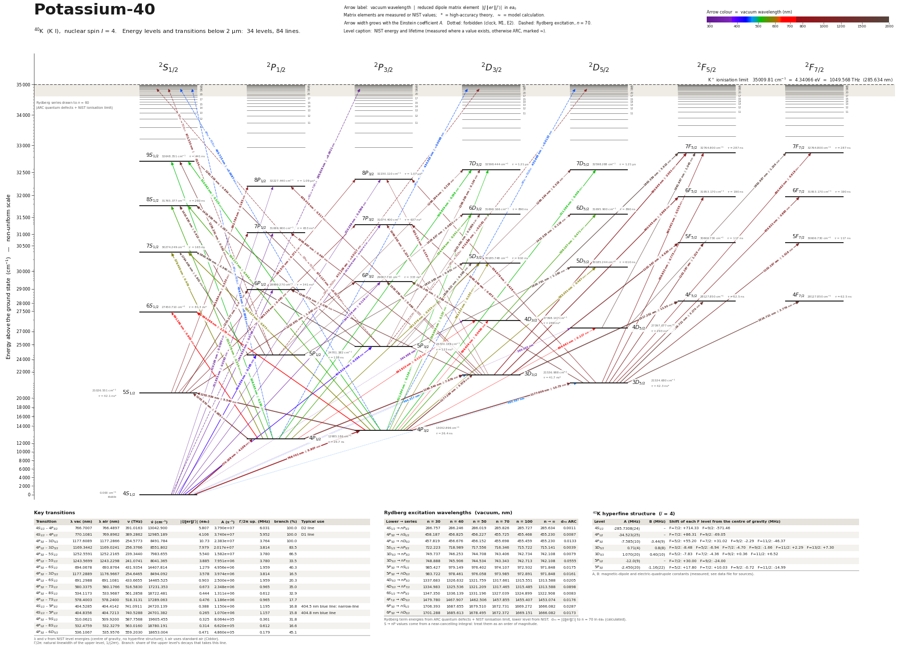

Potassium-40 energy level diagram
Energy levels and transitions of neutral 40K (K I, nuclear spin I = 4): 34 levels and 84 lines below 2 µm, each with its vacuum wavelength, frequency and, for 80 of them, the reduced dipole matrix element. Level energies come from the NIST Atomic Spectra Database; transition rates are 77 NIST, 5 measured.
Hover a line or a level to isolate it, click to keep it selected. Scroll to zoom, drag to move.

Download: diagram (PDF) diagram (SVG) transitions (CSV) levels (CSV) source code

Key transitions of 40K
| Transition | λ vac (nm) | λ air (nm) | ν (THz) | ν̃ (cm⁻¹) | |⟨J‖er‖J′⟩| (ea₀) | A (s⁻¹) | Γ/2π up. (MHz) | branch (%) | Typical use |
|---|---|---|---|---|---|---|---|---|---|
| 4S1/2 – 4P3/2 | 766.7007 | 766.4897 | 391.0163 | 13042.900 | 5.807 | 3.790e+07 | 6.031 | 100.0 | D2 line |
| 4S1/2 – 4P1/2 | 770.1081 | 769.8962 | 389.2862 | 12985.189 | 4.106 | 3.740e+07 | 5.952 | 100.0 | D1 line |
| 4P3/2 – 3D5/2 | 1177.6089 | 1177.2866 | 254.5773 | 8491.784 | 10.73 | 2.383e+07 | 3.764 | 100.0 | |
| 4P1/2 – 3D3/2 | 1169.3442 | 1169.0241 | 256.3766 | 8551.802 | 7.979 | 2.017e+07 | 3.814 | 83.5 | |
| 4P3/2 – 5S1/2 | 1252.5591 | 1252.2165 | 239.3440 | 7983.655 | 5.540 | 1.582e+07 | 3.780 | 66.5 | |
| 4P1/2 – 5S1/2 | 1243.5699 | 1243.2298 | 241.0741 | 8041.365 | 3.885 | 7.951e+06 | 3.780 | 33.5 | |
| 4P3/2 – 6S1/2 | 694.0678 | 693.8764 | 431.9354 | 14407.814 | 1.279 | 4.956e+06 | 1.959 | 40.3 | |
| 4P3/2 – 3D3/2 | 1177.2889 | 1176.9667 | 254.6465 | 8494.092 | 3.578 | 3.974e+06 | 3.814 | 16.5 | |
| 4P1/2 – 6S1/2 | 691.2988 | 691.1081 | 433.6655 | 14465.525 | 0.903 | 2.500e+06 | 1.959 | 20.3 | |
| 4P3/2 – 7S1/2 | 580.3375 | 580.1766 | 516.5830 | 17231.353 | 0.673 | 2.348e+06 | 0.965 | 35.0 | |
| 4P3/2 – 8S1/2 | 534.1173 | 533.9687 | 561.2858 | 18722.481 | 0.444 | 1.311e+06 | 0.612 | 32.9 | |
| 4P1/2 – 7S1/2 | 578.4003 | 578.2400 | 518.3131 | 17289.063 | 0.476 | 1.186e+06 | 0.965 | 17.7 | |
| 4S1/2 – 5P3/2 | 404.5285 | 404.4142 | 741.0911 | 24720.139 | 0.388 | 1.150e+06 | 1.195 | 16.8 | 404.5 nm blue line: narrow-line |
| 4S1/2 – 5P1/2 | 404.8356 | 404.7213 | 740.5288 | 24701.382 | 0.265 | 1.070e+06 | 1.157 | 15.8 | 404.8 nm blue line |
| 4P3/2 – 9S1/2 | 510.0621 | 509.9200 | 587.7568 | 19605.455 | 0.325 | 8.064e+05 | 0.361 | 31.8 | |
| 4P1/2 – 8S1/2 | 532.4759 | 532.3279 | 563.0160 | 18780.191 | 0.314 | 6.620e+05 | 0.612 | 16.6 | |
| 4P3/2 – 6D5/2 | 536.1067 | 535.9576 | 559.2030 | 18653.004 | 0.471 | 4.860e+05 | 0.179 | 45.1 |
λ and ν from NIST level energies (centre of gravity, no hyperfine structure); λ air uses standard air (Ciddor). Γ/2π: natural linewidth of the upper level, 1/(2πτ). Branch: share of the upper level's decays that takes this line.
Rydberg excitation wavelengths (vacuum, nm)
| Lower → series | n = 30 | n = 40 | n = 50 | n = 70 | n = 100 | n → ∞ | d₇₀ ARC |
|---|---|---|---|---|---|---|---|
| 4S1/2 → nP3/2 | 286.757 | 286.246 | 286.019 | 285.826 | 285.727 | 285.634 | 0.0011 |
| 4P3/2 → nS1/2 | 458.187 | 456.825 | 456.227 | 455.725 | 455.468 | 455.230 | 0.0087 |
| 4P3/2 → nD5/2 | 457.819 | 456.676 | 456.152 | 455.698 | 455.459 | 455.230 | 0.0133 |
| 5S1/2 → nP3/2 | 722.223 | 718.989 | 717.556 | 716.346 | 715.722 | 715.141 | 0.0039 |
| 3D5/2 → nP3/2 | 749.737 | 746.253 | 744.708 | 743.406 | 742.734 | 742.108 | 0.0079 |
| 3D5/2 → nF7/2 | 748.888 | 745.906 | 744.534 | 743.343 | 742.713 | 742.108 | 0.0555 |
| 5P3/2 → nS1/2 | 985.427 | 979.149 | 976.402 | 974.107 | 972.932 | 971.848 | 0.0175 |
| 5P3/2 → nD5/2 | 983.722 | 978.461 | 976.058 | 973.985 | 972.891 | 971.848 | 0.0161 |
| 4D5/2 → nP3/2 | 1337.683 | 1326.632 | 1321.759 | 1317.661 | 1315.551 | 1313.588 | 0.0205 |
| 4D5/2 → nF7/2 | 1334.983 | 1325.536 | 1321.209 | 1317.465 | 1315.485 | 1313.588 | 0.0898 |
| 6S1/2 → nP3/2 | 1347.350 | 1336.139 | 1331.196 | 1327.039 | 1324.899 | 1322.908 | 0.0083 |
| 4F7/2 → nD5/2 | 1479.780 | 1467.907 | 1462.506 | 1457.855 | 1455.407 | 1453.074 | 0.0176 |
| 6P3/2 → nS1/2 | 1706.393 | 1687.655 | 1679.510 | 1672.731 | 1669.272 | 1666.082 | 0.0287 |
| 6P3/2 → nD5/2 | 1701.288 | 1685.613 | 1678.495 | 1672.372 | 1669.151 | 1666.082 | 0.0173 |
Rydberg term energies from ARC quantum defects + NIST ionisation limit, lower level from NIST. d₇₀ = |⟨J‖er‖J′⟩| to n = 70 in ea₀ (calculated). S → nP values come from a near-cancelling integral: treat them as an order of magnitude.
40K hyperfine structure (I = 4)
| Level | A (MHz) | B (MHz) | Shift of each F level from the centre of gravity (MHz) |
|---|---|---|---|
| 4S1/2 | -285.7308(24) | – | F=7/2: +714.33 F=9/2: -571.46 |
| 4P1/2 | -34.523(25) | – | F=7/2: +86.31 F=9/2: -69.05 |
| 4P3/2 | -7.585(10) | -3.44(9) | F=5/2: +55.20 F=7/2: +31.02 F=9/2: -2.29 F=11/2: -46.37 |
| 3D5/2 | 0.71(4) | 0.8(8) | F=3/2: -8.48 F=5/2: -6.94 F=7/2: -4.70 F=9/2: -1.66 F=11/2: +2.29 F=13/2: +7.30 |
| 3D3/2 | 1.070(20) | 0.40(10) | F=5/2: -7.83 F=7/2: -4.36 F=9/2: +0.36 F=11/2: +6.52 |
| 5P1/2 | -12.0(9) | – | F=7/2: +30.00 F=9/2: -24.00 |
| 5P3/2 | -2.450(20) | -1.16(22) | F=5/2: +17.80 F=7/2: +10.03 F=9/2: -0.72 F=11/2: -14.99 |
A, B: magnetic-dipole and electric-quadrupole constants (measured; see data file for sources).
All 40K transitions below 2 µm
| Lower level | Upper level | λ vacuum (nm) | λ air (nm) | ν (THz) | Type | |⟨J‖er‖J′⟩| (ea₀) | A (s⁻¹) | Branching (%) | Source of matrix element / A |
|---|---|---|---|---|---|---|---|---|---|
| 4S1/2 | 8P3/2 | 310.2689 | 310.1789 | 966.2344 | E1 | 0.0309 NIST | 1.620e+04 NIST | 2.39 | NIST ASD A = 1.62e+04 s^-1 (accuracy B+) |
| 4S1/2 | 8P1/2 | 310.2946 | 310.2046 | 966.1544 | E1 | 0.019 NIST | 1.220e+04 NIST | 1.9 | NIST ASD A = 1.22e+04 s^-1 (accuracy C+) |
| 4S1/2 | 7P3/2 | 321.8083 | 321.7154 | 931.5871 | E1 | 0.0574 NIST | 5.010e+04 NIST | 3.65 | NIST ASD A = 5.01e+04 s^-1 (accuracy B+) |
| 4S1/2 | 7P1/2 | 321.8549 | 321.7620 | 931.4522 | E1 | 0.0363 NIST | 4.000e+04 NIST | 3.05 | NIST ASD A = 4e+04 s^-1 (accuracy C+) |
| 4S1/2 | 6P3/2 | 344.7359 | 344.6372 | 869.6293 | E1 | 0.116 NIST | 1.650e+05 NIST | 6.7 | NIST ASD A = 1.65e+05 s^-1 (accuracy B+) |
| 4S1/2 | 6P1/2 | 344.8363 | 344.7375 | 869.3762 | E1 | 0.0766 NIST | 1.450e+05 NIST | 5.94 | NIST ASD A = 1.45e+05 s^-1 (accuracy C+) |
| 4S1/2 | 4D3/2 | 364.9882 | 364.8842 | 821.3758 | E2 | – | – | – | – |
| 4S1/2 | 4D5/2 | 365.0024 | 364.8985 | 821.3437 | E2 | – | – | – | – |
| 4S1/2 | 5P3/2 | 404.5285 | 404.4142 | 741.0911 | E1 | 0.388 NIST | 1.150e+06 NIST | 16.8 | NIST ASD A = 1.15e+06 s^-1 (accuracy A) |
| 4S1/2 | 5P1/2 | 404.8356 | 404.7213 | 740.5288 | E1 | 0.265 NIST | 1.070e+06 NIST | 15.8 | NIST ASD A = 1.07e+06 s^-1 (accuracy B+) |
| 4S1/2 | 3D3/2 | 464.3175 | 464.1875 | 645.6627 | E2 | – | 1.540e+02 NIST | – | NIST ASD (accuracy AAA) |
| 4S1/2 | 3D5/2 | 464.3672 | 464.2372 | 645.5935 | E2 | – | 1.540e+02 NIST | – | NIST ASD (accuracy AAA) |
| 4P1/2 | 9S1/2 | 508.5651 | 508.4234 | 589.4869 | E1 | 0.230 NIST | 4.074e+05 NIST | 16.1 | NIST ASD A = 4.07e+05 s^-1 (accuracy AA) |
| 4P1/2 | 7D3/2 | 509.8592 | 509.7171 | 587.9907 | E1 | 0.298 NIST | 3.390e+05 NIST | 42.6 | NIST ASD A = 3.39e+05 s^-1 (accuracy B+) |
| 4P3/2 | 9S1/2 | 510.0621 | 509.9200 | 587.7568 | E1 | 0.325 NIST | 8.064e+05 NIST | 31.8 | NIST ASD A = 8.06e+05 s^-1 (accuracy A+) |
| 4P3/2 | 7D3/2 | 511.3638 | 511.2214 | 586.2606 | E1 | 0.136 NIST | 7.010e+04 NIST | 8.83 | NIST ASD A = 7.01e+04 s^-1 (accuracy A) |
| 4P3/2 | 7D5/2 | 511.3679 | 511.2254 | 586.2559 | E1 | 0.409 NIST | 4.220e+05 NIST | 52.3 | NIST ASD A = 4.22e+05 s^-1 (accuracy B+) |
| 4P1/2 | 8S1/2 | 532.4759 | 532.3279 | 563.0160 | E1 | 0.314 NIST | 6.620e+05 NIST | 16.6 | NIST ASD A = 6.62e+05 s^-1 (accuracy A+) |
| 4P3/2 | 8S1/2 | 534.1173 | 533.9687 | 561.2858 | E1 | 0.444 NIST | 1.311e+06 NIST | 32.9 | NIST ASD A = 1.31e+06 s^-1 (accuracy AA) |
| 4P1/2 | 6D3/2 | 534.4455 | 534.2969 | 560.9411 | E1 | 0.341 NIST | 3.860e+05 NIST | 36.3 | NIST ASD A = 3.86e+05 s^-1 (accuracy A) |
| 4P3/2 | 6D3/2 | 536.0990 | 535.9500 | 559.2110 | E1 | 0.157 NIST | 8.100e+04 NIST | 7.59 | NIST ASD A = 8.1e+04 s^-1 (accuracy A) |
| 4P3/2 | 6D5/2 | 536.1067 | 535.9576 | 559.2030 | E1 | 0.471 NIST | 4.860e+05 NIST | 45.1 | NIST ASD A = 4.86e+05 s^-1 (accuracy A) |
| 4P1/2 | 7S1/2 | 578.4003 | 578.2400 | 518.3131 | E1 | 0.476 NIST | 1.186e+06 NIST | 17.7 | NIST ASD A = 1.19e+06 s^-1 (accuracy AA) |
| 4P3/2 | 7S1/2 | 580.3375 | 580.1766 | 516.5830 | E1 | 0.673 NIST | 2.348e+06 NIST | 35 | NIST ASD A = 2.35e+06 s^-1 (accuracy AA) |
| 4P1/2 | 5D3/2 | 581.3764 | 581.2152 | 515.6599 | E1 | 0.333 NIST | 2.860e+05 NIST | 19.2 | NIST ASD A = 2.86e+05 s^-1 (accuracy A) |
| 4P3/2 | 5D3/2 | 583.3335 | 583.1718 | 513.9298 | E1 | 0.155 NIST | 6.130e+04 NIST | 4.11 | NIST ASD A = 6.13e+04 s^-1 (accuracy A) |
| 4P3/2 | 5D5/2 | 583.3507 | 583.1890 | 513.9147 | E1 | 0.467 NIST | 3.710e+05 NIST | 24.7 | NIST ASD A = 3.71e+05 s^-1 (accuracy A) |
| 4P1/2 | 6S1/2 | 691.2988 | 691.1081 | 433.6655 | E1 | 0.903 NIST | 2.500e+06 NIST | 20.3 | NIST ASD A = 2.5e+06 s^-1 (accuracy AA) |
| 4P1/2 | 4D3/2 | 693.8199 | 693.6286 | 432.0897 | E1 | 0.112 NIST | 1.900e+04 NIST | 0.397 | NIST ASD A = 1.9e+04 s^-1 (accuracy C) |
| 4P3/2 | 6S1/2 | 694.0678 | 693.8764 | 431.9354 | E1 | 1.279 NIST | 4.956e+06 NIST | 40.3 | NIST ASD A = 4.96e+06 s^-1 (accuracy AA) |
| 4P3/2 | 4D3/2 | 696.6092 | 696.4171 | 430.3596 | E1 | 0.04 NIST | 2.400e+03 NIST | 0.0457 | NIST ASD A = 2.4e+03 s^-1 (accuracy D+) |
| 4P3/2 | 4D5/2 | 696.6611 | 696.4690 | 430.3275 | E1 | 0.117 NIST | 1.370e+04 NIST | 0.261 | NIST ASD A = 1.37e+04 s^-1 (accuracy D+) |
| 4S1/2 | 4P3/2 | 766.7007 | 766.4897 | 391.0163 | E1 | 5.807 measured | 3.790e+07 measured | 100 | UDel Portal for High-Precision Atomic Data and Computation (Safronova group; data service… |
| 4S1/2 | 4P1/2 | 770.1081 | 769.8962 | 389.2862 | E1 | 4.106 measured | 3.740e+07 measured | 100 | UDel Portal for High-Precision Atomic Data and Computation (Safronova group; data service… |
| 3D5/2 | 7F5/2 | 890.4624 | 890.2180 | 336.6705 | E1 | 0.535 NIST | 1.369e+05 NIST | 4.14 | NIST ASD A = 1.37e+05 s^-1 (accuracy AA) |
| 3D5/2 | 7F7/2 | 890.4624 | 890.2180 | 336.6705 | E1 | 0.618 NIST | 1.369e+05 NIST | 62.3 | NIST ASD A = 1.37e+05 s^-1 (accuracy AA) |
| 3D3/2 | 7F5/2 | 890.6455 | 890.4010 | 336.6013 | E1 | 2.001 NIST | 1.914e+06 NIST | 58.2 | NIST ASD A = 1.91e+06 s^-1 (accuracy AA) |
| 5S1/2 | 8P3/2 | 892.5735 | 892.3285 | 335.8743 | E1 | 0.271 NIST | 5.230e+04 NIST | 5.58 | NIST ASD A = 5.23e+04 s^-1 (accuracy A) |
| 5S1/2 | 8P1/2 | 892.7863 | 892.5412 | 335.7942 | E1 | 0.183 NIST | 4.770e+04 NIST | 5.26 | NIST ASD A = 4.77e+04 s^-1 (accuracy B+) |
| 3D5/2 | 8P3/2 | 934.9788 | 934.7223 | 320.6409 | E1 | 0.428 NIST | 1.135e+05 NIST | 11.7 | NIST ASD A = 1.14e+05 s^-1 (accuracy A+) |
| 3D3/2 | 8P3/2 | 935.1806 | 934.9240 | 320.5717 | E1 | 0.143 NIST | 1.266e+04 NIST | 1.3 | NIST ASD A = 1.27e+04 s^-1 (accuracy A+) |
| 3D3/2 | 8P1/2 | 935.4141 | 935.1575 | 320.4917 | E1 | 0.317 NIST | 1.244e+05 NIST | 13.1 | NIST ASD A = 1.24e+05 s^-1 (accuracy A+) |
| 3D5/2 | 6F5/2 | 959.8320 | 959.5688 | 312.3385 | E1 | 0.775 NIST | 2.294e+05 NIST | 4.49 | NIST ASD A = 2.29e+05 s^-1 (accuracy AA) |
| 3D5/2 | 6F7/2 | 959.8320 | 959.5688 | 312.3385 | E1 | 0.895 NIST | 2.294e+05 NIST | 67.5 | NIST ASD A = 2.29e+05 s^-1 (accuracy AA) |
| 3D3/2 | 6F5/2 | 960.0447 | 959.7814 | 312.2693 | E1 | 2.899 NIST | 3.207e+06 NIST | 63 | NIST ASD A = 3.21e+06 s^-1 (accuracy AA) |
| 5S1/2 | 7P3/2 | 995.2379 | 994.9651 | 301.2269 | E1 | 0.491 NIST | 1.240e+05 NIST | 7.88 | NIST ASD A = 1.24e+05 s^-1 (accuracy B+) |
| 5S1/2 | 7P1/2 | 995.6838 | 995.4109 | 301.0920 | E1 | 0.335 NIST | 1.150e+05 NIST | 7.53 | NIST ASD A = 1.15e+05 s^-1 (accuracy B+) |
| 3D5/2 | 7P3/2 | 1048.2488 | 1047.9616 | 285.9936 | E1 | 0.673 NIST | 1.992e+05 NIST | 12.2 | NIST ASD A = 1.99e+05 s^-1 (accuracy A) |
| 3D3/2 | 7P3/2 | 1048.5025 | 1048.2152 | 285.9244 | E1 | 0.224 NIST | 2.205e+04 NIST | 1.36 | NIST ASD A = 2.2e+04 s^-1 (accuracy A+) |
| 3D3/2 | 7P1/2 | 1048.9974 | 1048.7100 | 285.7895 | E1 | 0.497 NIST | 2.168e+05 NIST | 13.7 | NIST ASD A = 2.17e+05 s^-1 (accuracy A+) |
| 3D5/2 | 5F5/2 | 1102.2867 | 1101.9849 | 271.9732 | E1 | 1.315 NIST | 4.360e+05 NIST | 5.13 | NIST ASD A = 4.36e+05 s^-1 (accuracy AA) |
| 3D5/2 | 5F7/2 | 1102.2867 | 1101.9849 | 271.9732 | E1 | 1.518 NIST | 4.360e+05 NIST | 77.1 | NIST ASD A = 4.36e+05 s^-1 (accuracy AA) |
| 3D3/2 | 5F5/2 | 1102.5672 | 1102.2653 | 271.9040 | E1 | 4.920 NIST | 6.099e+06 NIST | 72 | NIST ASD A = 6.1e+06 s^-1 (accuracy AA) |
| 4P1/2 | 3D3/2 | 1169.3442 | 1169.0241 | 256.3766 | E1 | 7.979 measured | 2.017e+07 measured | 83.5 | Safronova, Safronova, Clark, 'Laser cooling and trapping of potassium at magic wavelength… |
| 4P3/2 | 3D3/2 | 1177.2889 | 1176.9667 | 254.6465 | E1 | 3.578 measured | 3.974e+06 measured | 16.5 | Safronova, Safronova, Clark, 'Laser cooling and trapping of potassium at magic wavelength… |
| 4P3/2 | 3D5/2 | 1177.6089 | 1177.2866 | 254.5773 | E1 | 10.73 measured | 2.383e+07 measured | 100 | Safronova, Safronova, Clark, 'Laser cooling and trapping of potassium at magic wavelength… |
| 4P1/2 | 5S1/2 | 1243.5699 | 1243.2298 | 241.0741 | E1 | 3.885 NIST | 7.951e+06 NIST | 33.5 | NIST ASD A = 7.95e+06 s^-1 (accuracy AA) |
| 4P3/2 | 5S1/2 | 1252.5591 | 1252.2165 | 239.3440 | E1 | 5.540 NIST | 1.582e+07 NIST | 66.5 | NIST ASD A = 1.58e+07 s^-1 (accuracy AA) |
| 5S1/2 | 6P3/2 | 1252.9509 | 1252.6081 | 239.2691 | E1 | 1.300 NIST | 4.350e+05 NIST | 14.3 | NIST ASD A = 4.35e+05 s^-1 (accuracy B+) |
| 5S1/2 | 6P1/2 | 1254.2772 | 1253.9342 | 239.0161 | E1 | 0.900 NIST | 4.160e+05 NIST | 14 | NIST ASD A = 4.16e+05 s^-1 (accuracy A) |
| 5P1/2 | 9S1/2 | 1258.3414 | 1257.9972 | 238.2441 | E1 | 0.592 NIST | 1.782e+05 NIST | 7.02 | NIST ASD A = 1.78e+05 s^-1 (accuracy AA) |
| 5P3/2 | 9S1/2 | 1261.3184 | 1260.9734 | 237.6818 | E1 | 0.834 NIST | 3.512e+05 NIST | 13.9 | NIST ASD A = 3.51e+05 s^-1 (accuracy AA) |
| 5P1/2 | 7D3/2 | 1266.2938 | 1265.9474 | 236.7480 | E1 | 0.219 NIST | 1.200e+04 NIST | 1.65 | NIST ASD A = 1.2e+04 s^-1 (accuracy B) |
| 5P3/2 | 7D3/2 | 1269.3086 | 1268.9615 | 236.1856 | E1 | 0.104 NIST | 2.700e+03 NIST | 0.377 | NIST ASD A = 2.7e+03 s^-1 (accuracy B) |
| 5P3/2 | 7D5/2 | 1269.3337 | 1268.9865 | 236.1810 | E1 | 0.318 NIST | 1.670e+04 NIST | 2.25 | NIST ASD A = 1.67e+04 s^-1 (accuracy B) |
| 3D5/2 | 6P3/2 | 1338.1453 | 1337.7794 | 224.0358 | E1 | 1.389 NIST | 4.080e+05 NIST | 13.1 | NIST ASD A = 4.08e+05 s^-1 (accuracy A+) |
| 3D3/2 | 6P3/2 | 1338.5587 | 1338.1927 | 223.9666 | E1 | 0.464 NIST | 4.550e+04 NIST | 1.45 | NIST ASD A = 4.55e+04 s^-1 (accuracy A) |
| 3D3/2 | 6P1/2 | 1340.0726 | 1339.7063 | 223.7136 | E1 | 1.030 NIST | 4.470e+05 NIST | 14.7 | NIST ASD A = 4.47e+05 s^-1 (accuracy A+) |
| 5P1/2 | 8S1/2 | 1415.6296 | 1415.2427 | 211.7732 | E1 | 0.912 NIST | 2.970e+05 NIST | 7.46 | NIST ASD A = 2.97e+05 s^-1 (accuracy A+) |
| 5P3/2 | 8S1/2 | 1419.3985 | 1419.0106 | 211.2109 | E1 | 1.287 NIST | 5.870e+05 NIST | 14.7 | NIST ASD A = 5.87e+05 s^-1 (accuracy A+) |
| 5P1/2 | 6D3/2 | 1429.6367 | 1429.2460 | 209.6984 | E1 | 0.0631 NIST | 6.900e+02 NIST | 0.114 | NIST ASD A = 690 s^-1 (accuracy D) |
| 5P3/2 | 6D3/2 | 1433.4807 | 1433.0889 | 209.1360 | E1 | 0.0389 NIST | 2.600e+02 NIST | 0.0376 | NIST ASD A = 260 s^-1 (accuracy D+) |
| 5P3/2 | 6D5/2 | 1433.5352 | 1433.1435 | 209.1281 | E1 | 0.118 NIST | 1.600e+03 NIST | 0.23 | NIST ASD A = 1.6e+03 s^-1 (accuracy D+) |
| 3D5/2 | 4F5/2 | 1516.7211 | 1516.3067 | 197.6583 | E1 | 3.270 NIST | 1.035e+06 NIST | 6.63 | NIST ASD A = 1.04e+06 s^-1 (accuracy A) |
| 3D5/2 | 4F7/2 | 1516.7211 | 1516.3067 | 197.6583 | E1 | 3.776 NIST | 1.035e+06 NIST | 99.4 | NIST ASD A = 1.04e+06 s^-1 (accuracy A) |
| 3D3/2 | 4F5/2 | 1517.2522 | 1516.8377 | 197.5891 | E1 | 12.30 NIST | 1.463e+07 NIST | 92.8 | NIST ASD A = 1.46e+07 s^-1 (accuracy B+) |
| 5P1/2 | 7S1/2 | 1794.4086 | 1793.9187 | 167.0703 | E1 | 1.801 NIST | 5.687e+05 NIST | 8.48 | NIST ASD A = 5.69e+05 s^-1 (accuracy AA) |
| 5P3/2 | 7S1/2 | 1800.4686 | 1799.9770 | 166.5080 | E1 | 2.540 NIST | 1.120e+06 NIST | 16.7 | NIST ASD A = 1.12e+06 s^-1 (accuracy AA) |
| 5P1/2 | 5D3/2 | 1823.3649 | 1822.8672 | 164.4171 | E1 | 0.931 NIST | 7.240e+04 NIST | 4.16 | NIST ASD A = 7.24e+04 s^-1 (accuracy B) |
| 5P3/2 | 5D3/2 | 1829.6224 | 1829.1229 | 163.8548 | E1 | 0.398 NIST | 1.310e+04 NIST | 0.747 | NIST ASD A = 1.31e+04 s^-1 (accuracy B) |
| 5P3/2 | 5D5/2 | 1829.7910 | 1829.2915 | 163.8397 | E1 | 1.190 NIST | 7.800e+04 NIST | 4.43 | NIST ASD A = 7.8e+04 s^-1 (accuracy B+) |
| 4D5/2 | 7F5/2 | 1862.9873 | 1862.4788 | 160.9203 | E1 | 1.045 NIST | 5.700e+04 NIST | 1.68 | NIST ASD A = 5.7e+04 s^-1 (accuracy B+) |
| 4D5/2 | 7F7/2 | 1862.9873 | 1862.4788 | 160.9203 | E1 | 1.206 NIST | 5.700e+04 NIST | 25.2 | NIST ASD A = 5.7e+04 s^-1 (accuracy B+) |
| 4D3/2 | 7F5/2 | 1863.3588 | 1862.8501 | 160.8882 | E1 | 3.915 NIST | 8.000e+05 NIST | 23.5 | NIST ASD A = 8e+05 s^-1 (accuracy A) |
| 4S1/2 | 70P3/2 (Rydberg) | 285.8263 | – | 1048.8624 | E1 | 0.00107 model calc. | – | – | ARC model potential |
| 4P1/2 | 70S1/2 (Rydberg) | 454.5295 | – | 659.5665 | E1 | 0.00619 model calc. | – | – | ARC model potential |
| 4P1/2 | 70D3/2 (Rydberg) | 454.5030 | – | 659.6050 | E1 | 0.00976 model calc. | – | – | ARC model potential |
| 4P3/2 | 70S1/2 (Rydberg) | 455.7250 | – | 657.8364 | E1 | 0.00875 model calc. | – | – | ARC model potential |
| 4P3/2 | 70D5/2 (Rydberg) | 455.6983 | – | 657.8749 | E1 | 0.0133 model calc. | – | – | ARC model potential |
| 5P1/2 | 70S1/2 (Rydberg) | 972.3300 | – | 308.3238 | E1 | 0.0124 model calc. | – | – | ARC model potential |
| 5P1/2 | 70D3/2 (Rydberg) | 972.2086 | – | 308.3623 | E1 | 0.0117 model calc. | – | – | ARC model potential |
| 5P3/2 | 70S1/2 (Rydberg) | 974.1066 | – | 307.7614 | E1 | 0.0175 model calc. | – | – | ARC model potential |
| 5P3/2 | 70D5/2 (Rydberg) | 973.9847 | – | 307.8000 | E1 | 0.0161 model calc. | – | – | ARC model potential |
Reduced dipole matrix elements follow the convention A = ω³|d|²/(3πε₀ħc³(2J′+1)), with J′ the upper level. Tags show where a number comes from: measured, NIST compilation, high-accuracy theory, or a model calculation.
40K energy levels
K⁺ ionisation limit 35009.81 cm⁻¹ = 4.34066 eV = 1049.568 THz (285.634 nm)
Sources
- ARC (sum of calculated rates, 0 K)
- ARC model potential
- Allegrini, Arimondo, Orozco, J. Phys. Chem. Ref. Data 51, 043102 (2022), Table III; 'Reco…
- Allegrini, Arimondo, Orozco, J. Phys. Chem. Ref. Data 51, 043102 (2022), Table III; from …
- Allegrini, Arimondo, Orozco, J. Phys. Chem. Ref. Data 51, 043102 (2022), Table III; origi…
- Allegrini, Arimondo, Orozco, J. Phys. Chem. Ref. Data 51, 043102 (2022), Table III; origi…
- Falke, Sherstov, Tiemann, Lisdat, J. Chem. Phys. 125, 224303 (2006), abstract (from the l…
- Gallagher & Cooke, Phys. Rev. A 20, 670 (1979), abstract (time-resolved laser-induced flu…
- Glodz, Huzandrov, Safronova, Sydoryk, Szonert, Klavins, Phys. Rev. A 77, 022503 (2008), a…
- Glodz, Huzandrov, Safronova, Sydoryk, Szonert, Klavins, Phys. Rev. A 77, 022503 (2008), a…
- Mills, Behr, Courneyea, Pearson, Phys. Rev. A 72, 024501 (2005), abstract as given by OST…
- NIST ASD
- NIST ASD A = 1.04e+06 s^-1
- NIST ASD A = 1.07e+06 s^-1
- NIST ASD A = 1.12e+06 s^-1
- NIST ASD A = 1.14e+05 s^-1
- NIST ASD A = 1.15e+05 s^-1
- NIST ASD A = 1.15e+06 s^-1
- NIST ASD A = 1.19e+06 s^-1
- NIST ASD A = 1.22e+04 s^-1
- NIST ASD A = 1.24e+05 s^-1
- NIST ASD A = 1.27e+04 s^-1
- NIST ASD A = 1.2e+04 s^-1
- NIST ASD A = 1.31e+04 s^-1
- NIST ASD A = 1.31e+06 s^-1
- NIST ASD A = 1.37e+04 s^-1
- NIST ASD A = 1.37e+05 s^-1
- NIST ASD A = 1.45e+05 s^-1
- NIST ASD A = 1.46e+07 s^-1
- NIST ASD A = 1.58e+07 s^-1
- NIST ASD A = 1.62e+04 s^-1
- NIST ASD A = 1.65e+05 s^-1
- NIST ASD A = 1.67e+04 s^-1
- NIST ASD A = 1.6e+03 s^-1
- NIST ASD A = 1.78e+05 s^-1
- NIST ASD A = 1.91e+06 s^-1
- NIST ASD A = 1.99e+05 s^-1
- NIST ASD A = 1.9e+04 s^-1
- NIST ASD A = 2.17e+05 s^-1
- NIST ASD A = 2.29e+05 s^-1
- NIST ASD A = 2.2e+04 s^-1
- NIST ASD A = 2.35e+06 s^-1
- NIST ASD A = 2.4e+03 s^-1
- NIST ASD A = 2.5e+06 s^-1
- NIST ASD A = 2.7e+03 s^-1
- NIST ASD A = 2.86e+05 s^-1
- NIST ASD A = 2.97e+05 s^-1
- NIST ASD A = 260 s^-1
- NIST ASD A = 3.21e+06 s^-1
- NIST ASD A = 3.39e+05 s^-1
- NIST ASD A = 3.51e+05 s^-1
- NIST ASD A = 3.71e+05 s^-1
- NIST ASD A = 3.86e+05 s^-1
- NIST ASD A = 4.07e+05 s^-1
- NIST ASD A = 4.08e+05 s^-1
- NIST ASD A = 4.16e+05 s^-1
- NIST ASD A = 4.22e+05 s^-1
- NIST ASD A = 4.35e+05 s^-1
- NIST ASD A = 4.36e+05 s^-1
- NIST ASD A = 4.47e+05 s^-1
- NIST ASD A = 4.55e+04 s^-1
- NIST ASD A = 4.77e+04 s^-1
- NIST ASD A = 4.86e+05 s^-1
- NIST ASD A = 4.96e+06 s^-1
- NIST ASD A = 4e+04 s^-1
- NIST ASD A = 5.01e+04 s^-1
- NIST ASD A = 5.23e+04 s^-1
- NIST ASD A = 5.69e+05 s^-1
- NIST ASD A = 5.7e+04 s^-1
- NIST ASD A = 5.87e+05 s^-1
- NIST ASD A = 6.13e+04 s^-1
- NIST ASD A = 6.1e+06 s^-1
- NIST ASD A = 6.62e+05 s^-1
- NIST ASD A = 690 s^-1
- NIST ASD A = 7.01e+04 s^-1
- NIST ASD A = 7.24e+04 s^-1
- NIST ASD A = 7.8e+04 s^-1
- NIST ASD A = 7.95e+06 s^-1
- NIST ASD A = 8.06e+05 s^-1
- NIST ASD A = 8.1e+04 s^-1
- NIST ASD A = 8e+05 s^-1
- NIST ASD level energies
- Safronova, Safronova, Clark, 'Laser cooling and trapping of potassium at magic wavelength…
- Safronova, Safronova, Clark, 'Laser cooling and trapping of potassium at magic wavelength…
- Safronova, Safronova, Clark, 'Laser cooling and trapping of potassium at magic wavelength…
- Tiecke, Properties of Potassium, v1.03 (2019), Table 5 (hyperfine centre of gravity); ori…
- Tiecke, Properties of Potassium, v1.03 (2019), Table 6 (hyperfine centre of gravity); ori…
- UDel Portal for High-Precision Atomic Data and Computation (Safronova group; data service…
- UDel Portal for High-Precision Atomic Data and Computation (Safronova group; data service…
- UDel Portal for High-Precision Atomic Data and Computation (Safronova group; data service…
- UDel Portal for High-Precision Atomic Data and Computation (Safronova group; data service…
- UDel Portal for High-Precision Atomic Data and Computation (Safronova group; data service…
- UDel Portal for High-Precision Atomic Data and Computation (Safronova group; data service…
- UDel Portal for High-Precision Atomic Data and Computation (Safronova group; data service…
- UDel Portal for High-Precision Atomic Data and Computation (Safronova group; data service…
- UDel Portal for High-Precision Atomic Data and Computation (Safronova group; data service…
- UDel Portal for High-Precision Atomic Data and Computation (Safronova group; data service…
- UDel Portal for High-Precision Atomic Data and Computation (Safronova group; data service…
- UDel Portal for High-Precision Atomic Data and Computation (Safronova group; data service…
- UDel Portal for High-Precision Atomic Data and Computation (Safronova group; data service…
- UDel Portal for High-Precision Atomic Data and Computation (Safronova group; data service…
- UDel Portal for High-Precision Atomic Data and Computation (Safronova group; data service…
Atoms with measured data
- Lithium-632 levels, 85 lines
- Lithium-732 levels, 85 lines
- Beryllium-915 levels, 24 lines
- Sodium-2336 levels, 106 lines
- Magnesium-2418 levels, 61 lines
- Magnesium-2518 levels, 61 lines
- Potassium-3934 levels, 84 lines
- Potassium-4134 levels, 84 lines
- Calcium-4035 levels, 61 lines
- Calcium-4335 levels, 61 lines
- Rubidium-8536 levels, 94 lines
- Rubidium-8736 levels, 94 lines
- Strontium-8740 levels, 70 lines
- Strontium-8840 levels, 70 lines
- Caesium-13331 levels, 79 lines
- Barium-13744 levels, 89 lines
- Barium-13844 levels, 89 lines
- Dysprosium-16339 levels, 55 lines
- Dysprosium-16439 levels, 55 lines
- Ytterbium-17118 levels, 26 lines
- Ytterbium-17418 levels, 26 lines